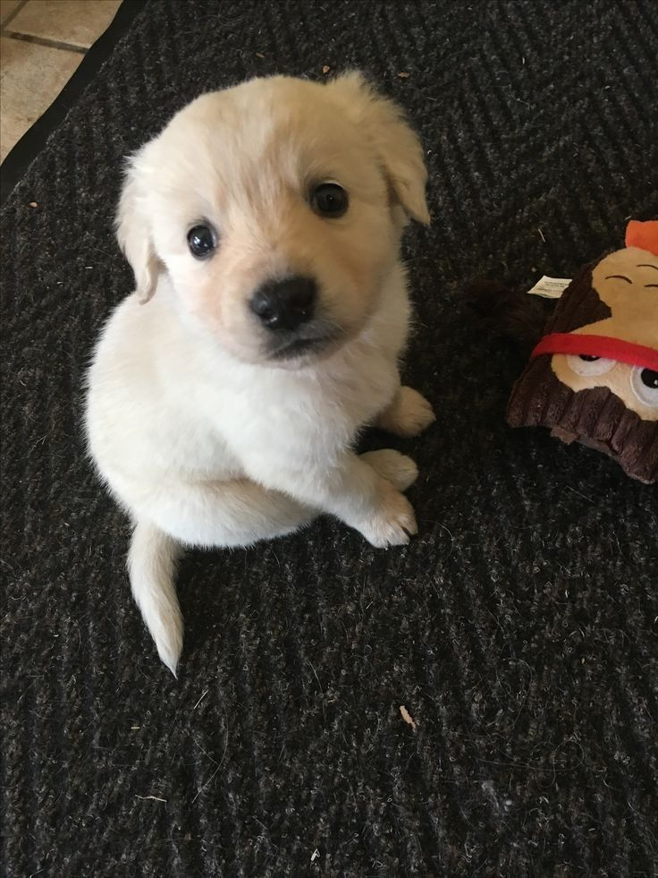

Hi there, I'm Leydi 👋
Perú

Conocí gdintelectual en un instituto de idiomas. Un compañero muy particular dijo que tenia en mente un gran proyecto. Administradora de profesión, siempre eh tenido demasiada curiosidad por el espiritu y el alma humana. Puedo identificar en segundo lo que sientes, y tal vez, si es que estas en problemas. Naturalmente tiendo mucho a observar mucho a las personas y ayudarlas. Me encantan los perritos, y soy animalista de nacimiento. Así mismo, priorizo demasiado la humanidad y sobre todo la armonia social, no me gusta hacer sentir mal a la gente. Quiero que todo el mundo sea feliz y que se acabe el sufrimiento de una vez por todas
ESFJ.